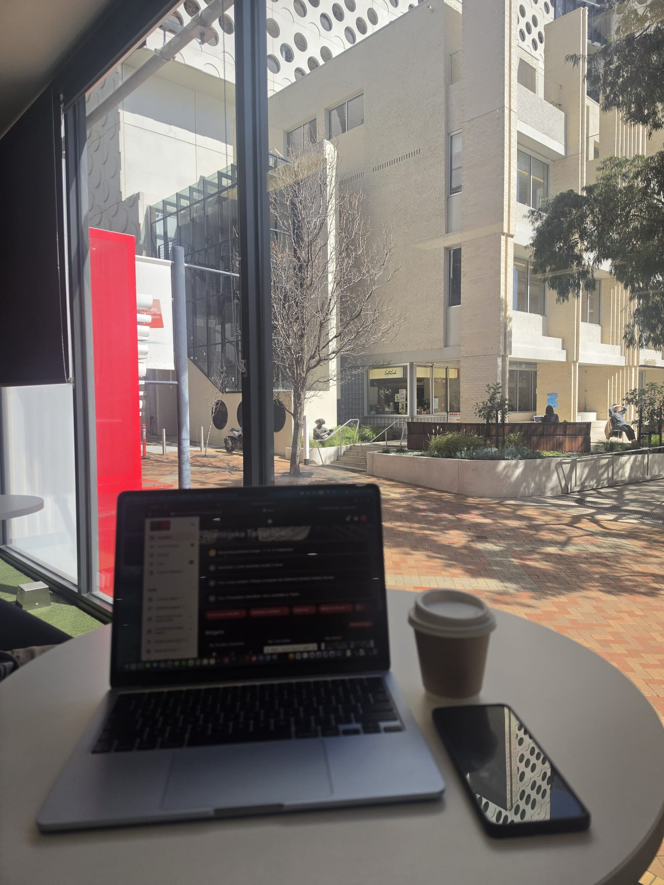

Practical Advice for New Students

- Studying: Make the Canvas dashboard your absolute best friend. Log in every morning to track your tasks, download module guides, and monitor announcements so you never get caught off guard by a sudden quiz.
- Food & Caffeine: Grab a takeaway coffee from a local cafe on Glenferrie Road and find an indoor window seat. It saves you money compared to ordering food delivery, and it sets a great mood for morning revision sessions.
- Managing Gaps Between Classes: Don't let your multi-hour class gaps go to waste. Use that time to sit down with your laptop, open up your assignment briefs, and work steadily so your weekends remain completely free.
My Recommended One-Day Schedule
Here is how I structure my day on campus to stay productive while keeping stress levels low.
| Time | Activity | Location | My Personal Tip |
|---|---|---|---|
| 10:00 AM - 12:00 PM | Lecture Content Review | Campus Library Window Seats | Log into Canvas early, review the lecture slides, and enjoy your morning coffee. |
| 12:00 PM - 02:00 PM | Lunch & Coding Prep | Glenferrie Road Area | Get some fresh air and clear your head before heading into practical computer labs. |
| 02:30 PM - 04:30 PM | Web Development Lab | Software Engineering Computing Labs | Test your code live on the server and get immediate feedback from your lab tutor. |